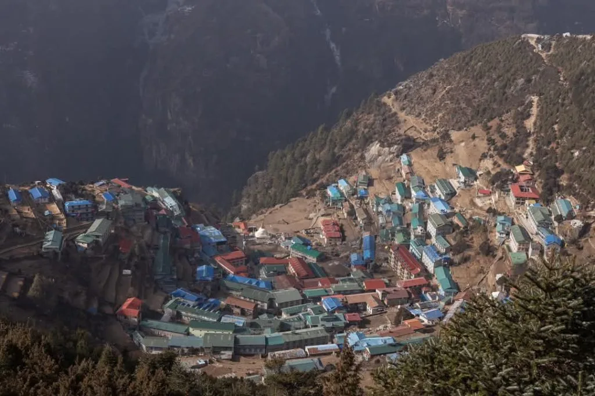
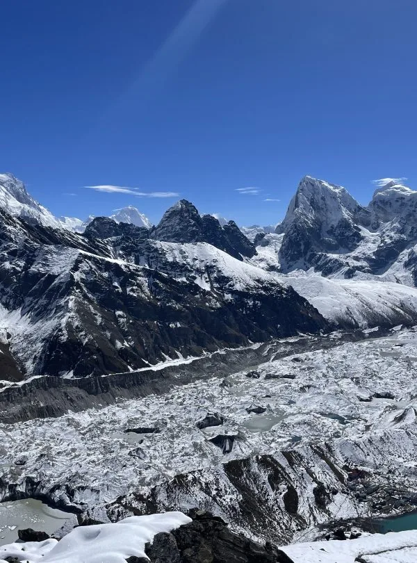
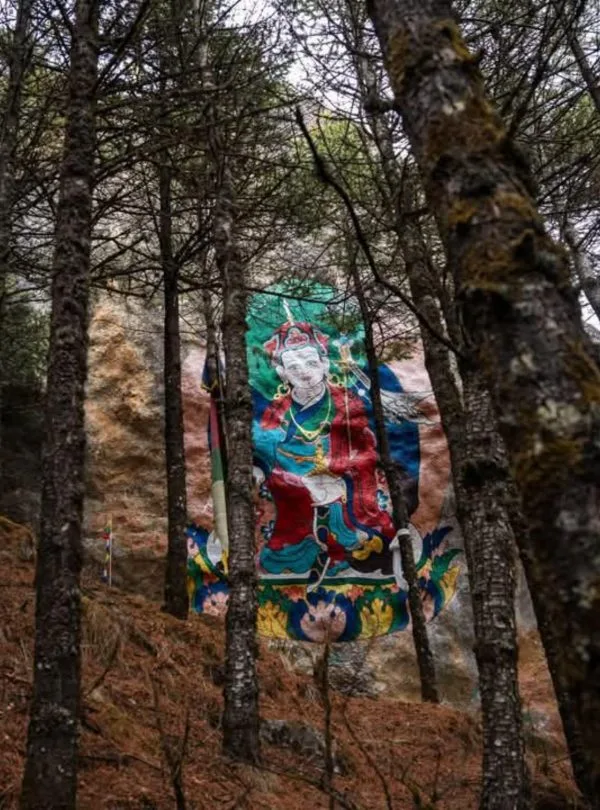
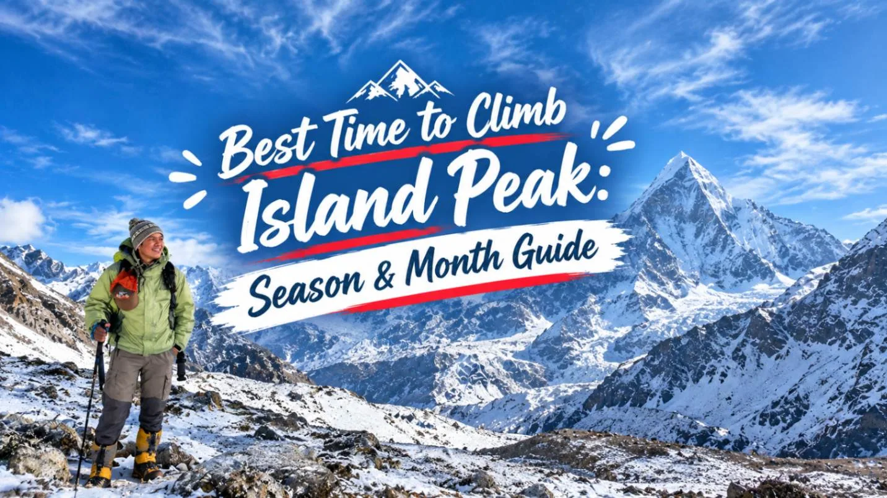
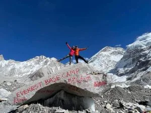

Our EBC Three High Passes with Island Peak Climbing (20 Days) with Igloo Himalaya Treks went beyond every expectation we had. What first pulled us towards them was their strict safety protocol and personal care. From start to finish, Sagar and our expert team made sure our EBC Three High Passes with Island Peak Climbing was comfortable, safe, and well-managed every single day!
Everest Region
High Pass Expedition & Peak Climbing
Renjo La • Cho La • Kongma La • Island Peak (6,189m)
EBC Three High Passes with Island Peak Climbing — 20 Days
Cross Renjo La, Cho La and Kongma La, visit Everest Base Camp and attempt Island Peak on this demanding twenty-day Khumbu journey.
100% Guaranteed Departure

Travelers' Choice
Best of the Best 2026
Island Peak Summit Ridge — 6,189m

Kongma La Pass — 5,535m

Gokyo Lakes & Ri — 5,357m

High Camp Glacier Approach

Everest Base Camp — 5,364m
Key Trip Facts
Essential Expedition Specifications
Duration
20 Days
17 mountain walking and climbing days with acclimatisation hikes
Difficulty
Very Demanding
Very demanding; high pass trekking and technical mountaineering summit attempt
Maximum Altitude
6,189 m / 20,305 ft
Island Peak summit; highest teahouse Gorak Shep (5,164 m)
Destination
Nepal
Khumbu Valley, Sagarmatha National Park
Activity
Peak Climbing & Trekking
High-altitude passes + alpine mountaineering
Accommodation
19 Nights Total
2 in Kathmandu, 16 in teahouses and 1 at Island Peak Base Camp
Transport
Lukla Flights
Lukla domestic flights, seasonally via Manthali with private road transfer
Meals
Full Board Mountain Meals
Trekking breakfast, lunch, dinner + tea/coffee; seasonal fruits; farewell dinner
Recommended Season
Spring & Autumn
March–May and September–November, subject to pass and climbing conditions
Trek Starts
Lukla
Scenic mountain flight to Tenzing-Hillary Airport
Trek Ends
Lukla
Return domestic flight to Kathmandu / Manthali
Trek Region
Everest / Khumbu
Sagarmatha National Park & Imja Valley
Package Start Point
Kathmandu
Arrival pickup at Tribhuvan International Airport (KTM)
Package End Point
Kathmandu
Airport departure transfer for international flight
EBC Island Peak Circuit Overview
Our twenty-day EBC Three High Passes with Island Peak Climbing combines a Khumbu circuit with a technical summit attempt. You cross Renjo La, Cho La and Kongma La, visit Everest Base Camp and hike Gokyo Ri and Kala Patthar. The journey then continues through Chhukung to Island Peak Base Camp for the climbing stage ahead.
After flying to Lukla, follow the Dudh Koshi valley through Phakding to Namche Bazaar. An acclimatisation hike precedes the walk through Thame and Lungden towards Renjo La. Crossing the pass brings you to Gokyo and its lakes. After climbing Gokyo Ri, continue towards Thangnak and Cho La. Village trails, monasteries and high mountain terrain introduce different parts of the Khumbu as you move between valleys on this circuit.
Beyond Cho La, walk through Dzongla and Lobuche to Gorak Shep for the Everest Base Camp visit. Hike Kala Patthar, return to Lobuche and cross Kongma La to Chhukung. A day combining acclimatisation with climbing preparation precedes Island Peak Base Camp. The summit attempt is followed by a descent to Chhukung before the return journey.
Acclimatisation days in Namche and Chhukung are part of the route, but this remains a demanding programme with no separate weather reserve. Long pass crossings, glacier travel and the Island Peak climb require fitness, suitable equipment and climbing preparation. Discuss your experience with us before booking. Conditions and your response to altitude may require changes, including turning back before objectives.
The route uses teahouses and an Island Peak base camp overnight. Two Kathmandu nights complete the programme; confirm hotel standards, camping facilities and climbing arrangements in your quotation.
EBC Island Peak Circuit Highlights
Cross Renjo La, Cho La and Kongma La on a circuit linking the Gokyo Valley, Everest trail and Chhukung through mountain passes.
Visit Everest Base Camp at 5,364 m, reached along rocky trails beside the Khumbu Glacier’s moraine.
Hike Gokyo Ri and Kala Patthar for mountain views, with visibility dependent on the weather that day.
Prepare in Chhukung before an Island Peak summit attempt using appropriate technical climbing equipment.
Walk through Thame, Lungden and Namche Bazaar, where Buddhist monasteries and village life complement mountain walking.
Include acclimatisation hikes in Namche and Chhukung, with equipment checks and climbing preparation before continuing towards the Island Peak attempt.
Why Book the EBC Island Peak Circuit with Igloo Himalaya Treks?
We help you plan the walking and climbing stages, with the following arrangements forming the basis of your package quotation.
Trek Briefing and Gear Check
Before departure, discuss the route, your experience and essential equipment with us. Confirm the climbing briefing, technical instruction and gear checks, including rental availability, before committing to the programme.
Guide and Porter Support
An experienced guide supports the route, with one porter shared between two trekkers. Confirm the climbing guide arrangements, supervision and group ratio in your quotation; carry daily essentials in your daypack.
Equipment Provided for the Trek
We provide a sleeping bag, down jacket and duffel bag for use during the trip. All three items must be returned afterwards. Technical climbing equipment and rental arrangements require separate confirmation.
Communication When Plans Change
Weather can affect flights, pass crossings and the summit attempt. We discuss options if plans change, including turning back or adjusting the route and any additional accommodation, staffing or transport costs involved.
Our twenty-day itinerary follows the three passes before Island Peak, with acclimatisation in Namche and Chhukung. Times and elevations are approximate; weather, local trail conditions and your progress determine the schedule and achievable objectives.
Day 1
Day 1: Arrival in Kathmandu
Tribhuvan International Airport, Kathmandu – 1,400 m / 4,593 ft – Arrival Transfer
Our representative meets you at Tribhuvan International Airport and accompanies you to your Kathmandu hotel. After arrival, discuss the programme, confirm the flight arrangements and review equipment requirements for the trekking and climbing stages with our team.
Depending on your arrival time, rest or explore nearby Thamel. Have your documents and equipment ready for departure; this itinerary has no separate Kathmandu preparation day before tomorrow’s journey to the mountains.
Day 2
Day 2: Fly to Lukla and Trek to Phakding
Kathmandu / Ramechhap to Lukla, trek to Phakding – 2,840 m / 9,317 ft – 35-min scenic flight + 3-4 hrs trek
Day 3
Day 3: Trek from Phakding to Namche Bazaar
Trek to Namche – 2,160 m / 7,087 ft – 5-6 hrs trek
Day 4
Day 4: Acclimatisation Day in Namche Bazaar
Namche acclimatisation; Everest View Hotel hike (Rest & Exploration) – 3,440 m / 11,286 ft – Active acclimatisation hike 3-4 hrs
Day 5
Day 5: Trek from Namche Bazaar to Thame
Namche to Thame – 2,400 m / 7,874 ft – 5-6 hrs trek
Day 6
Day 6: Trek from Thame to Lungden
Thame to Lumde – 2,520 m / 8,268 ft – 5-6 hrs trek
Day 7
Day 7: Cross Renjo La Pass and Trek to Gokyo
Lumde to Gokyo via Renjo La Pass (High Pass / Ascent) – 6,189 m – 7-9 hrs challenging trek
Day 8
Day 8: Hike Gokyo Ri and Trek to Thangnak
Gokyo Ri hike; trek to Thaknak – 2,760 m / 9,055 ft – 5-6 hrs trek
Day 9
Day 9: Cross Cho La Pass and Trek to Dzongla
Thaknak to Dzongla via Cho La Pass (High Pass / Ascent) – 6,189 m – 7-9 hrs challenging trek
Day 10
Day 10: Trek from Dzongla to Lobuche
Trek to Lobuche – 3,000 m / 9,843 ft – 5-6 hrs trek
Day 11
Day 11: Trek to Everest Base Camp and Return to Gorak Shep
Lobuche to Gorak Shep; Everest Base Camp hike – 5,364 m / 17,598 ft – 6-7 hrs trek
Day 12
Day 12: Hike Kala Patthar and Return to Lobuche
Kala Patthar hike; return to Lobuche (High Pass / Ascent) – 6,189 m – 7-9 hrs challenging trek
Day 13
Day 13: Cross Kongma La Pass and Trek to Chhukung
Lobuche to Chhukung via Kongma La Pass (High Pass / Ascent) – 6,189 m – 7-9 hrs challenging trek
Day 14
Day 14: Chhukung Ri Acclimatisation Hike and Climbing Preparation
Chhukung Ri acclimatisation hike; climbing preparation (Rest & Exploration) – 3,500 m / 11,482 ft – Active acclimatisation hike 3-4 hrs
Day 15
Day 15: Trek to Island Peak Base Camp
Trek to Island Peak Base Camp (High Pass / Ascent) – 6,189 m – 7-9 hrs challenging trek
Day 16
Day 16: Attempt Island Peak and Return to Chhukung
Island Peak summit; return to Chhukung (High Pass / Ascent) – 6,189 m – 7-9 hrs challenging trek
Day 17
Day 17: Trek from Chhukung to Namche Bazaar
Trek from Chukung to Namche Bazzar – 3,840 m / 12,598 ft – 5-6 hrs trek
Day 18
Day 18: Trek from Namche Bazaar to Lukla
Trek to Lukla (High Pass / Ascent) – 6,189 m – 7-9 hrs challenging trek
Day 19
Day 19: Fly from Lukla and Return to Kathmandu
Flight back to Kathmandu – 1,400 m / 4,593 ft – Domestic Flight
Day 20
Day 20: Departure from Kathmandu
Kathmandu Departure – 1,400 m / 4,593 ft – Airport Transfer
Not satisfied with this Itinerary?
Are you interested on planning custom trip? It only takes 2 minutes.
What’s Included in the EBC Island Peak Circuit
Airport transfers
Arrival pickup; departure transfer arrangements confirmed within your written quotation.
Scheduled transport
Lukla flights and seasonal road travel are planned; confirm the exact coverage and routing in your quotation.
Accommodation
Sixteen teahouse nights and one base camp night, with two planned Kathmandu nights. Confirm hotel standards, rooms and camp facilities in your quotation before departure.
Meals
Breakfast, lunch and dinner throughout trekking, with tea or coffee. Seasonal fresh fruit follows dinner when available. Kathmandu breakfasts and other city meals depend on your confirmed hotel arrangements.
Guide and porter
An experienced guide; one porter shared between two trekkers. Confirm climbing supervision.
Permits
Island Peak climbing permit, Sagarmatha National Park entry permit and Khumbu Pasang Lhamu Rural Municipality entrance ticket.
Trekking equipment
A sleeping bag, down jacket and duffel bag for use during the trip. Return these items after the programme.
First-aid supplies
A medical kit and first-aid equipment carried by the team.
Emergency coordination
Helicopter evacuation assistance if required; evacuation costs remain excluded.
Farewell dinner
A Kathmandu dinner after returning from the mountains, before your international departure.
What’s Not Included in the EBC Island Peak Circuit
International flights and Nepal visa
Airfare to and from Nepal and your visa fee.
Travel insurance
Your policy must cover technical mountaineering, the planned altitude, emergency evacuation and medical treatment.
Emergency expenses
Helicopter rescue, evacuation and medical treatment costs are excluded, even when assistance is arranged.
Personal equipment
Climbing boots, clothing and technical gear unless confirmed; sleeping bag, down jacket and duffel bag are supplied.
Extra food and drinks
Snacks, bottled water, hot water and beverages beyond included meals, seasonal fruit and tea or coffee.
Other Kathmandu meals
Lunches and dinners apart from the farewell dinner included in Kathmandu.
Lodge extras
Shower, Wi-Fi and charging coverage requires confirmation.
Team tips
Gratuities for guides, porters and transport drivers.
Additional accommodation or transport
Extra costs may apply when delays, itinerary changes or personal extensions require services outside the programme.
Review group pricing and departure dates.
View Starting Prices & Dates
EBC Island Peak Circuit Dates & Availability
Clear rates by group size
All prices are in US dollars per person
Starting Prices
1 person
USD 2,655
Solo departure
2–4 people
USD 2,585
Small group
Lowest starting rate
5–9 people
USD 2,355
Per person
10–20 people
Request a quote
Group pricing
Other group sizes
Request a quote
Custom arrangements
| Number of travellers | Starting price per person | Action |
|---|---|---|
| 1 person | USD 2,655 | |
| 2–4 people | USD 2,585 | |
| 5–9 people Lowest starting rate | USD 2,355 | |
| 10–20 people | Request a quote | |
| Other group sizes | Request a quote |
Prices are in US dollars and represent starting rates. Contact us with your dates, experience and group size to confirm availability and your final quotation.
Climbing Gear
Personal trekking and mountaineering equipmentConfirm technical equipment inclusion, rentals and fit with your climbing team before your Kathmandu departure.
Clothing
Layer for cold camps, changing weather and long walking daysWe provide an insulated down jacket, which must be returned after the trek.
Sleeping Equipment
Loan equipment and optional personal comfort itemA sleeping bag is supplied on loan; return it after the trek. A liner is optional for personal comfort.
Toiletries & Hygiene
Personal care, medicines and essentials for the trailPack your personal medicines and blister dressings with your toiletries so they are easy to reach.
Electronics
Lighting, communication and charging essentialsKeep your headlamp and spare batteries together, and carry your charging cables with your power bank.
Documents & Personal Items
Keep essential documents protected and accessibleKeep your passport, document copies and insurance details together in a waterproof pouch.
Read Before You Book
Before booking this walking and climbing programme, consider the altitude, technical demands and successive long days. Review your experience, equipment and comfort expectations with us to judge whether the itinerary suits you.
Trek Difficulty and Fitness
This programme combines three high passes with a technical mountaineering objective. Expect steep paths, moraine, glacier crossings and exposed ground on consecutive days.
Island Peak requires climbing equipment and supervised procedures. Pass days are long, while the summit attempt and return to Chhukung can extend considerably.
Previous high-altitude trekking and relevant climbing preparation are strongly advisable. Discuss your experience honestly before booking, including familiarity with crampons, harnesses and ropes.
Build endurance through regular hill walks, strength training and long days carrying a daypack. Practise descents and consecutive walking days. Arrange suitable technical instruction and equipment practice before departure; a short camp briefing cannot replace the preparation needed.
Altitude and Acclimatisation
Acclimatisation days are in Namche and Chhukung, with additional height gained during pass crossings. These opportunities do not guarantee adjustment; symptoms and conditions determine whether the programme can continue.
Tell your guide immediately about headaches, nausea, dizziness or unusual fatigue. Do not continue to a higher sleeping altitude while experiencing symptoms of altitude illness. If symptoms worsen despite resting at the same elevation, descent is necessary. Completing this circuit must remain secondary to your health.
Medical Conditions and Travel Insurance
If you have an existing medical condition, seek advice from a healthcare professional familiar with high-altitude travel before booking. Discuss your planned route and any medicines you take.
Arrange insurance covering technical mountaineering on Island Peak to the full planned altitude, approximately 6,189 metres, plus trekking, emergency helicopter evacuation and medical treatment. Check exclusions, rescue approval procedures and excess charges. Carry the policy details and your insurer’s emergency contact information throughout.
Accommodation and Room Facilities
The planned accommodation comprises two Kathmandu nights, sixteen teahouse nights and one base camp night. Confirm hotel standards, room sharing, bathrooms and camp facilities in your quotation before the journey begins.
Rooms and facilities vary, with simpler arrangements at higher stops. Expect very cold nights. Confirm room sharing, toilets and base camp tents beforehand, together with the catering and staff support provided for the planned climbing camp overnight.
Food and Dietary Requirements
Trekking meals include breakfast, lunch and dinner with tea or coffee. Seasonal fruit follows dinner when available; Kathmandu includes a farewell dinner.
Tell us about allergies or dietary requirements before booking so we can discuss what can be arranged along the route. Explain any strict requirements clearly, including concerns about shared cooking equipment.
Drinking Water
Carry reusable bottles and drink boiled or appropriately treated water. Water from a clear stream or an untreated tap may still contain germs. Boiling is the most reliable way to kill germs.
If boiling is unavailable, filtration followed by disinfection offers broader protection than many portable filters alone. Follow the instructions for your treatment equipment or tablets.
Guide and Porter Support
An experienced guide and one porter for two trekkers support the journey. Confirm climbing supervision, instruction and technical equipment arrangements beforehand.
Your porter carries the agreed main luggage allowance; you carry daily essentials.
Showers, Charging and Communication
Shower, charging and Wi-Fi arrangements vary between lodges; confirm which services your quotation covers. Connections can be unreliable, especially higher on the circuit, and base camp facilities require confirmation.
Carry a power bank and tell family that contact may be unavailable for periods during the journey.
Permits and Documents
The package includes the Island Peak climbing permit, Sagarmatha National Park entry and Khumbu municipality permit.
Carry your passport, insurance details and document copies. Confirm climbing documentation beforehand; your Nepal visa remains your responsibility to arrange.
Flight Delays and Extra Time
Lukla flights can be delayed or cancelled because of weather. During peak periods, flights may use Manthali Airport in Ramechhap, requiring a road transfer.
No separate weather reserve is included. Return flights are on Day 19 before Day 20 departure; discuss extra time and costs for possible disruption.
Altitude Profile of EBC Three High Passes with Island Peak Climbing
Interactive elevation map showing daily gain and acclimatization stopping points. Switch units below to convert between meters (m) and feet (ft).
Expedition Route Information
The route commences with a flight into Lukla, following the Dudh Koshi river up to Namche Bazaar. The path then continues through Tengboche, Dingboche, Lobuche, and Gorak Shep, concluding at the Khumbu Glacier base camp.
Weather on the EBC Three High Passes with Island Peak Climbing
Find out the temperature ranges you will experience along the trail. Toggle between daily variation and monthly averages, and switch units below to convert between Celsius (°C) and Fahrenheit (°F).
EBC Three High Passes with Island Peak Climbing Map
Book This Trek
We offer standard group departures as well as custom private itineraries. Use the interactive Booking Calculator widget located in the sticky sidebar on the right side of this page to choose your group size and toggle options like the Helicopter return upgrade.
Once you have calculated your estimated pricing, click the Book / Inquire Now button to submit an inquiry. Our lead Himalayan coordinators will get back to you within 4 hours with availability and booking steps!
Best Himalayan Trekking Reviews
Over 15,000 adventure seekers have explored Everest, Annapurna, and Manaslu with Igloo Himalaya Treks.

9 May

28 February

11 January

14 March


Frequently Asked Questions for Three High Passes with Island Peak Climb (21 Days)
General Information
When is the best time to trek to Three High Passes with Island Peak Climb (21 Days)?
∨
The best times for Three High Passes with Island Peak Climb (21 Days) are Autumn (September to November) and Spring (March to May). During these peak months, skies are remarkably clear, daytime hiking temperatures are comfortable, and mountain visibility is pristine. Spring also brings colorful blooming rhododendron forests.
How long does the Three High Passes with Island Peak Climb (21 Days) take?
∨
Our standard Three High Passes with Island Peak Climb (21 Days) itinerary takes 21 Days round trip from Kathmandu, expertly paced with built-in acclimatization stages and contingency timing to maximize safety and scenic enjoyment.
Is Three High Passes with Island Peak Climb (21 Days) suitable for beginners?
∨
Peak climbing requires a good baseline of cardiovascular fitness and mental endurance. While prior technical mountaineering experience is advantageous, our certified climbing Sherpa guides conduct a comprehensive glacier training session at Base Camp covering fixed rope ascending (jumar), crampon footwork, and descents, making it accessible to fit trekkers with strong determination.
What is the daily hiking distance and hours during the trek?
∨
On regular trekking days, you will walk 5 to 6 hours covering 10 to 14 km. On summit day, you will start between 01:00 AM and 02:00 AM with headlamps, completing a demanding 10 to 14-hour round trip push to the summit and back to camp.
Where do flights to Lukla depart from, and how long is the flight?
∨
During peak trekking seasons (Spring: March–May; Autumn: September–November), civil aviation authorities schedule Lukla flights from Ramechhap Airport (Manthali), a 4-hour scenic drive from Kathmandu. In off-peak months, flights depart directly from Tribhuvan International Airport in Kathmandu. The flight duration is approximately 25–30 minutes.
What permits are required for the Three High Passes with Island Peak Climb (21 Days)?
∨
You need two main permits: the Sagarmatha National Park Entry Permit and the Khumbu Pasang Lhamu Rural Municipality Permit. If climbing Island Peak, Lobuche, or Mera Peak, an official NMA Climbing Permit and refundable garbage deposit are also required. All permits are 100% arranged and included by Igloo Himalaya Treks.
What is the luggage weight limit for Lukla domestic flights?
∨
Domestic flights to Lukla strictly enforce a 15 kg (33 lbs) total weight limit per passenger (10 kg main duffel bag + 5 kg daypack). Excess weight incurs extra baggage fees or may need to be left behind, so we recommend packing light.
What happens if the flight to or from Lukla is delayed by cloud cover?
∨
Lukla's Tenzing-Hillary Airport operates under visual flight rules (VFR). If clouds temporarily obscure the runway, flights are held until visibility clears. We include contingency timing in our packages and can arrange shared emergency helicopter shuttles if required.
What technical climbing gear is provided by Igloo Himalaya Treks vs what should I bring?
∨
We provide all group climbing equipment: high-altitude four-season expedition tents, dynamic climbing ropes, snow bars, ice screws, and shared kitchen equipment. Trekkers should bring or rent personal mountaineering gear in Kathmandu: rigid mountaineering boots, crampons, climbing harness, ice axe, ascender (Jumar), descender (Figure 8 / ATC), locking carabiners, and a climbing helmet.
What kind of accommodation is available along the route?
∨
During the approach and return trek, you will stay in clean, comfortable twin-sharing teahouse lodges. During the climbing phase at Base Camp and High Camp, we provide high-altitude 4-season alpine expedition tents, insulated sleeping mats, a heated dining tent, and hot meals prepared by our camp chef.
What food and meals are served during the trek?
∨
Teahouse menus offer a hearty variety of fresh meals: traditional Dal Bhat (lentil soup, rice, and organic seasonal vegetable curry with free refills), fried noodles, momo dumplings, potato dishes, pasta, soups, porridge, pancakes, and eggs. Vegetarian and vegan choices are abundant along the entire route.
Is drinking water safe along the trail?
∨
Tap and stream water should not be consumed untreated. We strongly recommend drinking boiled water available at teahouses or using reusable water bottles with purification tablets, SteriPEN UV purifiers, or LifeStraw filtration systems to eliminate single-use plastic waste in protected conservation areas.
Can I do the Three High Passes with Island Peak Climb (21 Days) solo as an independent trekker?
∨
Under Nepal Tourism Board regulations enforced for mountain safety, solo independent trekking without a licensed guide is restricted in national parks. Solo travelers are warmly welcomed to join one of our small group departures or hire a private licensed Sherpa guide through Igloo Himalaya Treks.
What physical fitness level is required for this trip?
∨
A high level of cardiovascular endurance and leg stamina is required. We recommend 2 to 3 months of regular aerobic conditioning: stair climbing carrying a 7–10 kg backpack, trail running, cycling, and resistance exercises to prepare your body for long summit day exertions.
How do you manage Altitude Sickness (AMS) during the trek?
∨
Safety is our top priority. Our itineraries feature conservative daily altitude gains. Lead guides carry pulse oximeters to check your blood oxygen saturation and heart rate every morning and evening. Guides are trained in wilderness first aid and carry supplemental oxygen and medical kits. If symptoms persist, immediate descent is arranged.
Is travel insurance mandatory for the Three High Passes with Island Peak Climb (21 Days)?
∨
Yes! Comprehensive travel insurance that explicitly covers high-altitude mountain trekking up to 6,189 m / 20,305 ft and emergency helicopter rescue/evacuation is mandatory for all clients before departure.
What climbing guide to client ratio is maintained on summit day?
∨
For maximum safety and summit success, we maintain a strict 1:2 or 1:3 climbing guide-to-client ratio on all peak ascents. All our climbing leaders are certified by the Nepal Mountaineering Association (NMA) and many have summited 8,000m Himalayan giants multiple times.
What are the key scenic and cultural highlights of the Three High Passes with Island Peak Climb (21 Days)?
∨
Highlights include standing on the summit of Three High Passes with Island Peak Climb with 360-degree views of Everest, Lhotse, Makalu, and Ama Dablam; crossing glaciated terrain with fixed ropes; visiting Everest Base Camp and Kala Patthar; and experiencing Sherpa mountain culture in Namche Bazaar and Tengboche Monastery.
Do I need to book the Three High Passes with Island Peak Climb (21 Days) in advance?
∨
We recommend booking 2 to 4 months in advance, especially for Spring (March–May) and Autumn (September–November) departures, to secure preferred domestic flights, top-rated teahouses, and licensed veteran guides.
What extra personal expenses should I budget for per day?
∨
You should budget approximately $15 to $25 USD per day for personal expenses not included in standard packages, such as hot showers ($3–$5), electronic device charging ($2–$5), Wi-Fi internet access cards ($3–$5), cold beers/soft drinks, snacks, and tipping for your guide and porters.
How much deposit is required to confirm our booking?
∨
We require a 20% advance deposit to secure your permits, logistics, transport, and guide assignments. The remaining 80% balance can be settled conveniently upon your arrival in Kathmandu via credit card, cash (USD, EUR, GBP, NPR), or bank wire transfer.
What local cultural customs and etiquette should I observe during the trek?
∨
In the Khumbu and mountain valleys, always pass mani stones, chortens, and prayer wheels on your right (clockwise). Remove shoes before entering Buddhist monasteries, ask permission before photographing monks or villagers, do not point your feet toward sacred shrines, and greet locals with 'Tashi Delek' or 'Namaste'.
What is the significance of the Buddhist prayer flags, mani stones, and chortens along the trail?
∨
Prayer flags in five colors (blue for sky, white for air, red for fire, green for water, yellow for earth) carry prayers of peace, compassion, and strength on the mountain wind. Mani stones are carved with the sacred mantra 'Om Mani Padme Hum'. Chortens (stupas) hold sacred relics and harmonize the surrounding environment. Trekkers are asked to treat them with utmost reverence.
How does trekking with Igloo Himalaya Treks support local Himalayan communities?
∨
We practice responsible tourism by employing local guides and porters from the valleys we trek through, ensuring fair living wages, comprehensive medical insurance, and proper mountain gear. We support local teahouses, patronize family-run farms, and contribute a portion of each trek's proceeds toward remote village schools and trail conservation projects.
MORE ADVENTURES
You might also like
Handpicked trips in the same region and style — a natural next step from this one.